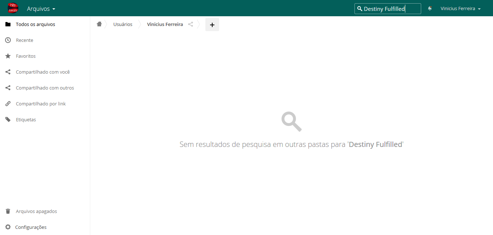
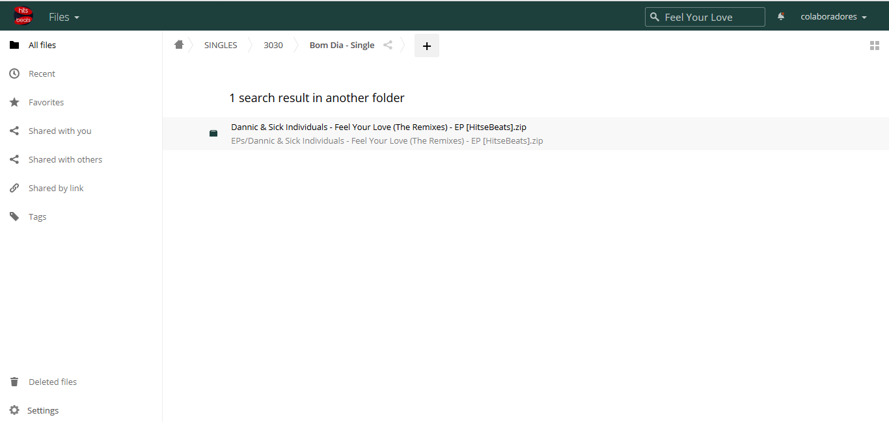
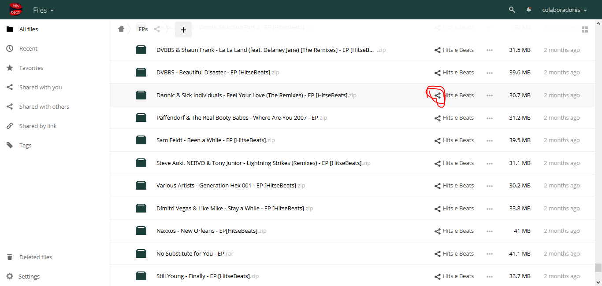
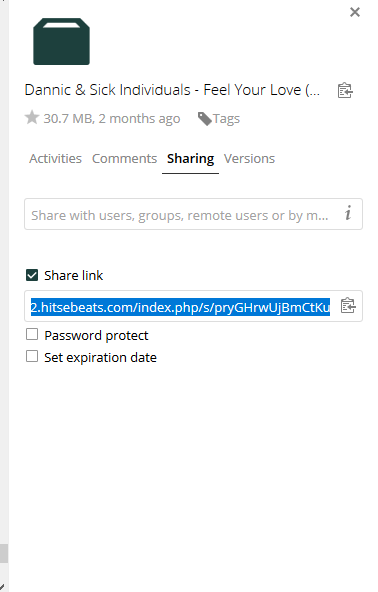
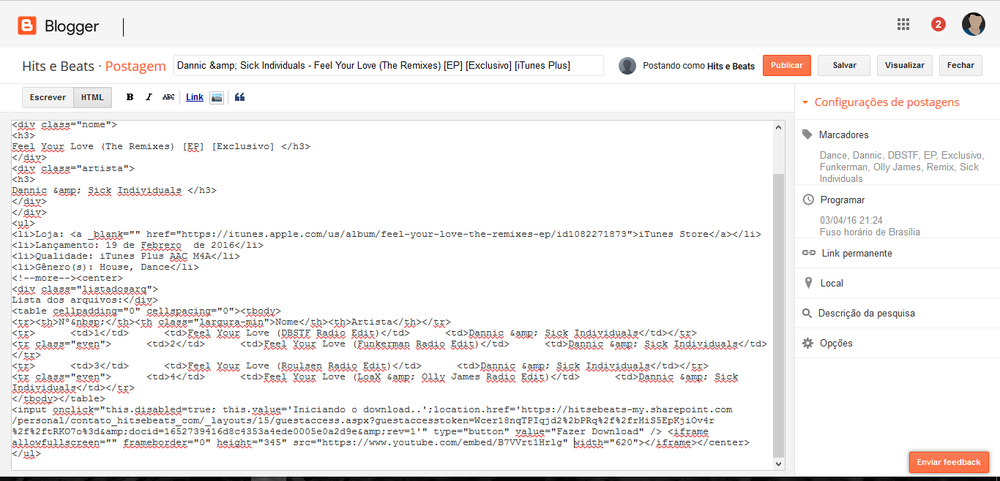
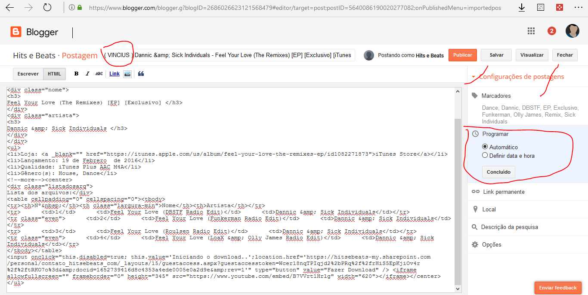

Renovar os links
- Ter uma conta no Gmail
- Depois de ter acessado o Gmail e ter aceitado o Convite para o blogger, acesse o Blogger, Você terá esse menu ao lado esquerdo que contem, Postagens, estatísticas, comentários e afins, em postagens a parte que você irá usar será "importada" que é onde tem os posts ainda não publicados com links antigos ( Imagem a baixo )
- Você vai ter acesso as duas nuvens do Hits&Beats, onde poderá pesquisar as músicas/álbums nessas nuvens, se uma nuvem não tiver a outra provavelmente terá, caso nenhuma das duas tenha, pule essa música. Você escolhe uma música, exemplo: Dannic & Sick Individuals - Feel Your Love ( The Remixex) [EP], Agora iremos nas nuvens pesquisar antes de clicar na música/álbum/EP pra não perder tempo.
- Aqui na nuvem 1 não tinha o EP
- 
- Mas na 2 tinha
- 
- Clicando na pasta, será rederecionado, onde você poderá pegar o link clicando no icone de compartilhar, depois marque a caxinha e copie o link.
- 
- 
- Depois de copiar o link iremos pra parte mais chatinha que é atualizar os links, vamos clicar em editar, irá abrir essa pagina, caso o HTMl esteja embaralhado clique novamente em "Escrever" e em seguida HTML que voltará a ficar organizado.
- 
- A parte que iremos usar será o HTML, PROGRAMAR e os MARCADORES
- Na parte do HTML é onde vamos atualizar os links, role até o final e procure por : location.href='
- É onde começa o link, tudo que estiver entre location.href=' e '" type="button apague e coloque o novo link, no final do link coloque /download para ter o link direto, MUITO CUIDADO PARA NÃO APAGAR AS ÁSPAS.
- Também temos que colocar um link do youtube ( caso tenha video oficial ou lyric) caso não tenha no post se não tiver usaremos o Ouvir Online.
- 
- Atualizou o link? Maravilha!! agora iremos alterar o titulo, colocar seu nome para que fique facil de achar, depois iremos em programar e selecionar automatico e depois concluir, na parte dos marcadore só iremos alterar caso tenha "Lançamentos". Feito isso clique em salvar e depois fechar ( NUNCA CLIQUE EM PUBLICAR ) prontinho, agora seu post foi para os rascunhos e será analizado por uns dos moderadores para ser postado :smile:
Contas das nuvens
1 - https://cloud.hitsebeats.com
Login: colaboradores
Senha: radar545
2- https://cloud2.hitsebeats.com
Login: colaboradores
Senha: Atualizacao2017